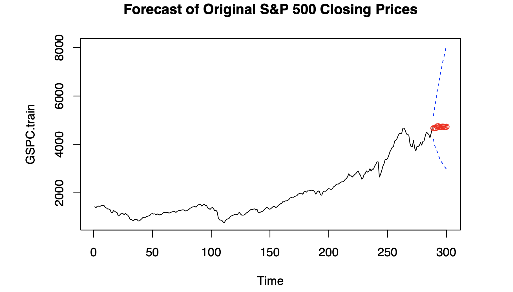
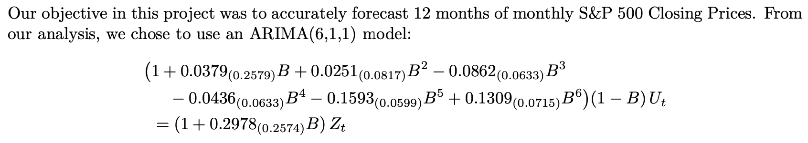

Forecast S&P 500 Prices
time series data analysis · 2025
Using the Box-Jenkins framework, I built an ARIMA forecasting pipeline for the S&P 500's monthly closing prices. I pulled daily data (Yahoo Finance) from Jan-2000 to Dec-2024 with quantmod in R (2025.05.0+496), aggregated to monthly, applied a Box-Cox transform (λ = -0.3030) to stabilize variance, and first-differenced to remove trend, yielding a stationary series.
Guided by ACF/PACF patterns and AICc, I compared candidate models and selected ARIMA(6,1,1) whose residuals behaved like white noise and met stationarity/invertibility checks. To evaluate generalization, I trained on 2000-2023 and held out all twelve months of 2024. Back-transformed 12-month forecasts remained within prediction intervals but showed a slight downward bias, modestly underestimating actual closes.
The project demonstrates a transparent, reproducible workflow—data ingestion, transformation, diagnostics, model selection, and out-of-sample validation—that delivers directionally accurate, interval-aware forecasts and practical insight into market direction, volatility, and risk.
